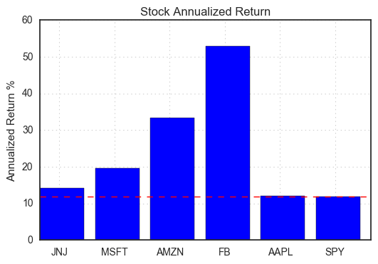
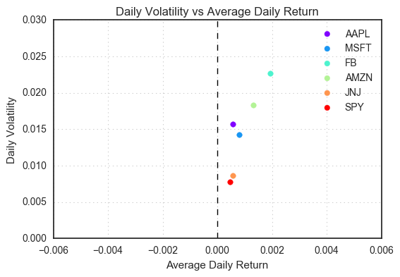
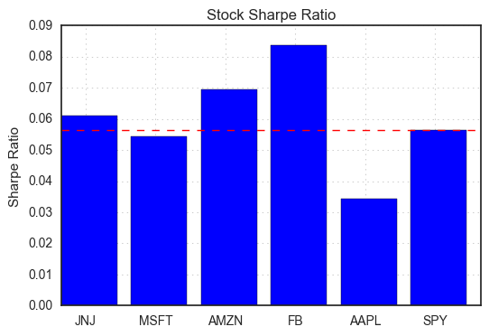
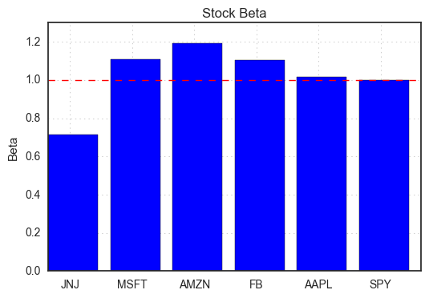
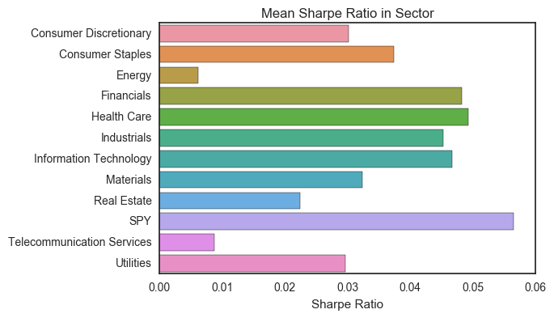
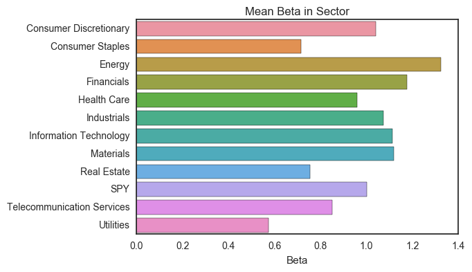

S&P 500 Stocks Analysis
August 19, 2017
Note: The code for this project is available in my Github Repository.
1. Introduction
The S&P 500 is an American stock market index based on the market capitalizations of 505 large companies having common stock listed on the NYSE or NASDAQ. It covers about 80 percent of the American equity market by capitalization. The index is weighted by free-float market capitalization, so the more valuable a company is, the relatively more of the index it accounts for.
This project focuses on handling and analyzing stock market data with Python. The historical stock data over the past 5 years is obtained from Google Finance and imported into Python Pandas. The data is manipulated to calculate a variety of performance metrics including returns, volatility, alpha, beta, Sharpe ratio, and stock moving averages. The different stocks as well as sectors contained in the S&P 500 index are compared based on these metrics. The best and worst performing stocks/sectors are identified.
Note that the ultimate goal for stock analysis is to design an optimal portforlio and a trading model that can potentially allow maximized returns, but this is beyond the scope of this post and will be explored in a future post.
2. Analysis
2.1 Data
The 5-year historical stock price data for all individual stocks contained in the S&P 500 index is obtained from Google Finance. Note that there are many other sources to get stock data, such as Yahoo! Finance, Quandl API. The price data for individual stocks is then concatenated into one master dataset. The price data of SPDR S&P 500 trust ETF (SPY, designed to track the S&P 500 stock market index) is also obtained and added into the dataset to sereve as reference. The information of Global Industry Classification Standard (GICS) sector of each stock is included in the the Sector attribute of the dataset. The final dataset contains the following fields:
Date: date in the format of YYYY-MM-DDOpen: the stock open priceHigh: the highest price of the dayLow: the lowest price of the dayClose: the stock close priceVolume: the stock trading volumeName: the stock ticker symbolSector: the GICS sector name
After reading the dataset into Pandas, it is found that:
- The dataset contains 605,586 rows and 8 columns.
- The fields of
Open,High,Low, andVolumecontain missing values (less than 0.1%); the fieldClosehas no missing values. - There are 502 unique stocks including SPY (data for NBL, AMT, LMT, and NWL is not available) in the dataset and they belong to 11 unique sectors.
- The largest sector is Consumer Discretionary with 83 stocks, and the smallest is Telecommunication Services with only 4 stocks.
2.2 Stock Performance - Example Stocks
There are different metrics for evaluating stock performance. Each individual investor may have different standard. Overall, these a few variables people consider, for example, returns including total return, average daily return, etc., risk of the stock such as standard deviation, beta value, and risk-adjusted returns such as Sharpe ratio and alpha.
As an example to examine these different metrics from historical stock data, the top 5 stocks with the highest S&P 500 component weights as well as SPY are analyzed. They are AAPL (weight 3.92%), MSFT (weight 2.68%), FB (weight 1.90%), AMZN (1.83%), JNJ (weight 1.71%). (The weights are as of August 14 2017.)
Close Price
The close price for these stocks are separated from the master dataset. The summary statistics is shown in the table below.

Also, the correlation matrix of these stocks is shown in the figure below. Overall, the close prices of these stocks are highly correlated, with correlation coefficients close to 1. Among these stocks, Apple stock shows relatively weaker correlations with other stocks.

Return: Simple Return
The dataset contains 5 years of stock price data. Imagine we purchase the stock 5 years ago, we can use this dataset to calculate simple return. Simple return is the incremental amount of net income from an investment, divided by the investment in it (the price 5 years ago when we purchase it).
The formular for simple return is given by:
”“” Simple Return = (Current Price - Purchase Price) / Purchase Price “””
The plot below shows stock returns over the past 5 years.

This kind of plot is one of the simplest ways of comparing stock performance. It puts all different stock price to a same relative scale and makes the trend clear. As we can see, Facebook stock stands out from the plot with over 700% returns over the past five years. Amazon stock comes next to Facebook with around 300% total returns. Apple, Johnson & Johnson, and Microsoft stocks show returns comparable to that of SPY which is around 100% over the past five years.
Return: Annualized Return
Annualized return is a percentage value showing how much an investment has increased in value on average per year over a period of time. It can be a preferable metric to use over simple return when we want to evaluate how successful an investment has been, or to compare the returns of two investments.
Given simple return, the formula to calculate annualized return is:
”“” Annualized Return = (Simple Return + 1) ^ (1 / Years Held) - 1 “””
Using the simple return of 5 years, the annualized returns of these stocks can be calculated with Years Held = 5 in the formula above. We can then compare the annualized returns of the stocks of interest by a bar plot, as shown below.

The annualized return for SPY is slightly over 10%. Apple stock is very close to SPY. All other stocks beat SPY in terms of annualized return. Facebook and Amazon realize over 50% and over 30% annualized returns, respectively, which significantly outperform SPY.
Return: Daily Return We know that stock prices change on a daily basis. Therefore, we can also calculate daily returns to monitor the magnitude of the investment value. The daily return can be calculated with the following formula:
”“” Daily Return = (Close Price Today - Close Price Yesterday) / Close Price Yesterday “””
The summary statistics of daily return is shown in the table below.

We can also visualize daily return with a line chart. The plot below displays the daily returns of these different stocks in a 100-day time frame.

Overall, we can see that stock price fluctuates every day, like a random walk, so the daily return of a stock fluctuates around 0. All the above stocks have an average daily return slightly above 0, implying that they are overall profitable. Facebook stock price fluctuates the most, as demonstrated in the line chart as well as from its standard deviation of daily return.
Volatility: Standard Deviation
As shown above, the daily return of Facebook stock fluctuates the most, and we say it is the most volatile among the 6 stocks. Volatility is a statistical measure of the dispersion of returns for a given stock. Volatility is commonly measured by using the standard deviation (or variance) of the returns from the stock. The daily volatility is thus the standard deviation of daily return. Commonly, the higher the volatility, the riskier the stock, i.e., the price of the stock can change dramatically over a short time period in either direction.
We can compare the return and volatility of the selected stocks using the following plot. It shows daily volatility in the y-axis, and the average daily return in the x-axis. Ideally, we would hope to have a ‘golden’ stock that lies on the lower right of the plot, but in reality, a stock with higher average daily return is usually associated with higher volatility (lying on the top right of the plot as Facebook stock). Among these stocks, Apple stock seems to have an average daily return too small for its risk.

Sharpe Ratio
The Sharpe ratio is a risk-adjusted return measurement developed by economist William Sharpe. It is calculated by subtracting the risk-free return, defined as a U.S. Treasury Bond, from the investment’s rate of return, and then dividing by the investment’s standard deviation of returns. It is useful for comparing funds with similar historical returns. A higher Sharpe ratio indicates a higher risk-adjusted return. With the daily return data, we can calculate Sharpe ratio with the following formula:
”“” Sharpe Ratio = Mean(stock daily return - risk_free daily return) / Stdv(stock daily return - risk_free daily return) “””
Note that since the daily risk-free rate of return is very small (close to 0), the Sharpe ratio is roughly equal to the ratio between the average daily return and the daily volatility.
The selected stocks’ Sharpe ratios (1.0% is used as the annual risk-free return for the calculation) are compared with bar plot.

As mentioned above, Sharpe ratio is useful for comparing funds with similar historical returns. Here, let’s compare Apple stock and Johnson & Johnson stock. From this plot, Apple stock has a much smaller Sharpe ratio than JNJ, indicating that it has a much smaller risk-adjusted return. This is consistent with the Daily Volatility vs Average Daily Return plot, which shows that both stocks have almost the same average daily return but AAPL has much higher volatility, resulting in a smaller risk-adjusted return.
Beta One measure of relative volatility of a particular stock to the market is its beta. Beta is a historical measure of volatility. When standard deviation measures an asset’s price movements compared to its average over time, beta measures the asset’s volatility relative to a benchmark (i.e. an index). A beta of zero implies no correlation between the assets. Any beta above zero would imply a positive correlation with volatility expressed by how much over zero the number is. Any beta below zero would imply a negative correlation with volatility expressed by how much under zero the number is.
The formula for calculating beta is given by: “”” Beta = Covariance(stock’s daily return, index’s daily return) / Var(index’s daily return) “”” The calculated beta values for the selected stocks are shown below:

From the bar plot, we can see that
- All the beta values are above zero, implying positive correlations with the volatility of SPY.
- Microsoft, Apple, Amazon, and Facebook stocks have beta values greater than 1, and thus are theoretically more volatile than the benchmark SPY. For example, Amazon stock’s beta value is close to 1.2, which implies a volatility 20% greater than SPY.
- Johnson & Johnson stock has a beta value smaller than 1 (close to 0.7), implying a volatility smaller (30% less) than the benchmark.
Alpha
Alpha is the difference between a fund’s expected returns based on its beta and its actual returns. It is used to measure performance on a risk adjusted basis. An alpha of zero means the investment has exactly earned a return adequate for the volatility assumed. An alpha over zero means the investment has earned a return that has compensated for the volatility risk taken. An alpha of less than zero means the investment has earned a return that has not compensated for the volatility risk taken.
To calculate alpha, we can use the following formula: “”” Alpha = Stock Return - Risk_Free Return - beta * (Index Return - Risk_Free Return) “””
Note that alpha and Sharp ratio have some similarities and differences, as summarized below:
- Similarity: alpha and Sharpe ratio both offer a way to measure returns on a risk-adjusted basis.
- Difference: alpha applies the measure in relation to a benchmark, whereas Sharpe ratio is based on its own standard deviation (volatility in absolute term).
- Usage: for investors seeking an investment that closely matches the performance of a chosen benchmark, alpha is the number to review. But a fund’s R-squared must be high for alpha to be meaningful. Sharpe ratio is meaningful all the time, and it can be used to compare funds of all types, e.g., stock or bond, because standard deviation is calculated the exact same way for any type of fund but different benchmarks will be used to calculate beta, and beta-based alpha.
The selected stocks alpha values are compared below (1.0% is used as the annual risk-free return):

We can see that with SPY as the benchmark, all stocks except Apple stock have alpha much greater than 0. Facebook stock has the largest alpha value of 0.4, implying that it can potentially generate 40% excess return over SPY after adjusting for the inherited market risk (beta).
Moving Average - trends in a stock
In addition to looking into the above performance metrics, we can also examine the trends in a stock by looking at the chart of the stock price. As shown above, stock data has ‘noises’, i.e., random price fluctuations. Moving average can be used to help smooth out short-term fluctuations and highlight longer-term trends or cycles. Given a series of numbers and a fixed subset size, the first element of the moving average is obtained by taking the average of the initial fixed subset of the number series. Then the subset is modified by “shifting forward”; that is, excluding the first number of the series and including the next value in the subset.
A candlestick chart is commonly used to display the price trend as it shows all four price variables (open, high, low, and close) in one plot. Candlesticks are usually composed of the body and an upper and a lower shadow (or wick). The body illustrates the opening and closing trades. The wick illustrates the highest and lowest traded prices during the time interval represented.
Below is a candlestick plot of Facebook stock in the past year with 20-day, 50-day, and 200-day moving averages plotted.

The green box from the candlestick chart indicates a month of gain with the close price higher than the open price. The red box indicates a month of loss with the close price lower than the open price.
From the above plot, we can see that a moving average is much smoother than the actual stock data. Moving average is thus a stronger indicator of the stock price. A stock needs to be above or below the moving average line in order for the line to change direction. Therefore, crossing a moving average signals a possible change in trend, and should draw attention. In fact, the cross-over of moving averages is sometimes used as buy/sell indicators.
2.3 All Stocks in S&P 500
After looking at these different aspects of the example stocks, it is time to extend the analyses to all stocks contained in the S&P 500 index and find out the best and worst performing stocks.
Note: some stocks do not have all 5-year data and are not included in the analysis.
Ranks of Individual Stocks
After comparing all individual stocks contained the S&P 500 index, the following results are obtained:
5-year simple return:
|Highest - Top 5 | Lowest - Top 5 | |——————–|——————| | NFLX: 18.387755 | CHK: -0.788131 | | NVDA: 10.542152 | RRC: -0.744488 | | EA: 8.214005 | UAA: -0.666253 | | FB: 7.378312 | MOS: -0.647579 | | INCY: 5.919452 | NOV: -0.598479 |
Annualized return:
| Highest - Top 5 | Lowest - Top 5 | |——————–|——————| | NFLX: 0.809279 | CHK: -0.266815 | | NVDA: 0.631013 | RRC: -0.238829 | | EA: 0.559156 | UAA: -0.197059 | | FB: 0.529788 | MOS: -0.188269 | | INCY: 0.472361 | NOV: -0.166815 |
Daily Volatility:
| Lowest - Top 5 | Highest - Top 5 | |——————–|——————| | SPY: 0.007732 | HPQ: 0.075218 | | PEP: 0.008243 | CHK: 0.040829 | | JNJ: 0.008615 | FCX: 0.034134 | | WM: 0.008725 | DVA: 0.033393 | | RSG: 0.008850 | JEC: 0.032622 |
Sharpe ratio:
| Highest - Top 5 | Lowest - Top 5 | |——————–|——————| | NOC: 0.103468 | MOS: -0.033347 | | FISV: 0.098225 | RRC: -0.029155 | | NVDA: 0.096966 | NOV: -0.028653 | | EA: 0.094236 | MAT: -0.026853 | | LUV: 0.089887 | CTL: -0.025788 |
Beta:
| Lowest - Top 5 | Highest - Top 5 | |——————–|——————| | ED: 0.350578 | FCX: 1.958471 | | SO: 0.384824 | URI: 1.859497 | | DUK: 0.451130 | MU: 1.761376 | | EIX: 0.463275 | CHK: 1.750542 | | AWK: 0.484815 | LNC: 1.683014 |
Alpha:
| Highest - Top 5 | Lowest - Top 5 | |——————-|——————| | NFLX: 0.659643 | CHK: -0.466871 | | NVDA: 0.489420 | FCX: -0.388349 | | EA: 0.428524 | RRC: -0.365522 | | FB: 0.399971 | MRO: -0.345597 | | STZ: 0.345713 | UAA: -0.334458 |
Ranks by Sectors
By aggregating the dataset by sectors and calculate the average value of the above metrics, we can rank the sectors, as shown by the plots below:
Annualized Return:

Volatility:

Sharpe Ratio:

Beta:

Alpha:

According to the plots above, the best sectors seem to be Health Care and Information Technology, in terms of high annualized return, Sharpe ratio, alpha. The Energy sector in the riskiest sector and realizes the least risk-adjusted return (both alpha, and Sharpe ratio).
3. Summary
In this project, common performance metrics including returns, alpha, beta, Sharpe ratio, and moving averages are analyzed for stocks contained in the S&P 500 index. The price data of SPY, i.e., SPDR S&P 500 trust ETF (designed to track the S&P 500 stock market index), is used as reference for performance comparisons and also serves as benchmark for calculating alpha and beta. In addition to individual stocks, the averaged performance of different stock sectors in S&P 500 are also compared.
Given the performance metrics computed here, it is found that:
- Several IT stocks performed really well in the past 5 years, including Netflix (NFLX), Nvdia (NVDA), Facebook (FB), and Electronic Arts (EA).
- Some Energy stocks had performance among the worst, including Chesapeake Energy (CHK), Range Resources (RRC), National Oilwell (NOV), etc.
- The best-performing sector is found to be Health Care and Information Technology and the worst-performing one is Energy.
Some next steps for stock analysis which will be covered in the future include:
- Design and evaluate portfolio holdings and trading strategies
- Build predictive machine learning models to give recommendations on trading actions